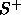

The PseudoInv initialization function computes all weights with the help of the pseudo inverse weight matrix which is calculated with the algorithm of Greville. The formula for the weight calculation is: W = Q

. Where is the 'Pseudoinverse' of the input
vectors, Q are the output vectors and W are the desired weights of the net.
The bias is not set and there are no parameters necessary.
Please note that the calculated weights are usually odd.
As mentioned in
is the 'Pseudoinverse' of the input
vectors, Q are the output vectors and W are the desired weights of the net.
The bias is not set and there are no parameters necessary.
Please note that the calculated weights are usually odd.
As mentioned in